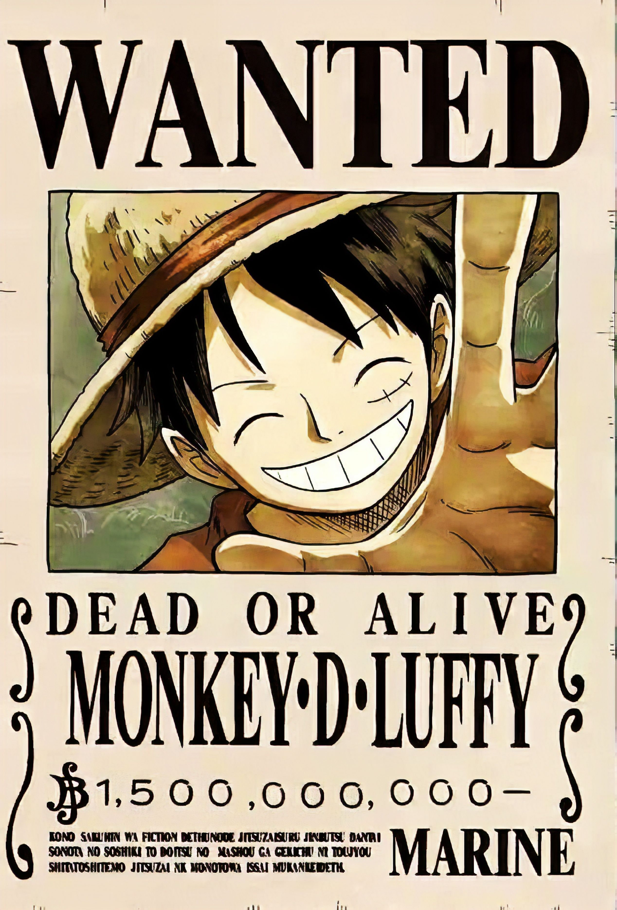
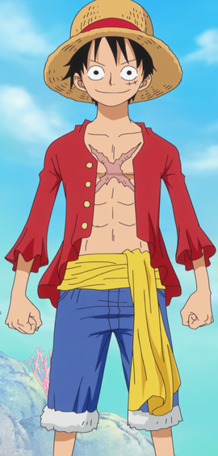

Monkey D. Luffy, juga dikenal sebagai "Topi Jerami Luffy" dan umumnya sebagai "Topi Jerami", adalah protagonis utama dari manga dan anime, One Piece. Dia adalah pendiri dan kapten Bajak Laut Topi Jerami yang semakin terkenal dan kuat, serta salah satu dari empat petarung top. Impian seumur hidupnya adalah menjadi Raja Bajak Laut dengan menemukan harta karun legendaris yang ditinggalkan oleh Raja Bajak Laut yang terlambat, Gol D. Roger. Dia percaya bahwa menjadi Raja Bajak Laut berarti memiliki kebebasan terbanyak di dunia. Setelah invasi Totto Land dan tindakannya melawan Yonko Big Mom, dia saat ini dianggap oleh pers global untuk menjadi Kaisar Kelima.
Momen Terbaik Monkey D Luffy

| Nama Jepang : | モンキー･D･ルフィ |
|---|---|
| Nama Romanisasi: | Monkī Dī. Rufi |
| Nama Inggris Resmi: | Monkey D. Luffy |
Sumber
https://onepiece.fandom.com/id/wiki/Monkey_D._Luffy
https://www.w3schools.com/bootstrap4/tryit.asp?filename=trybs_template1